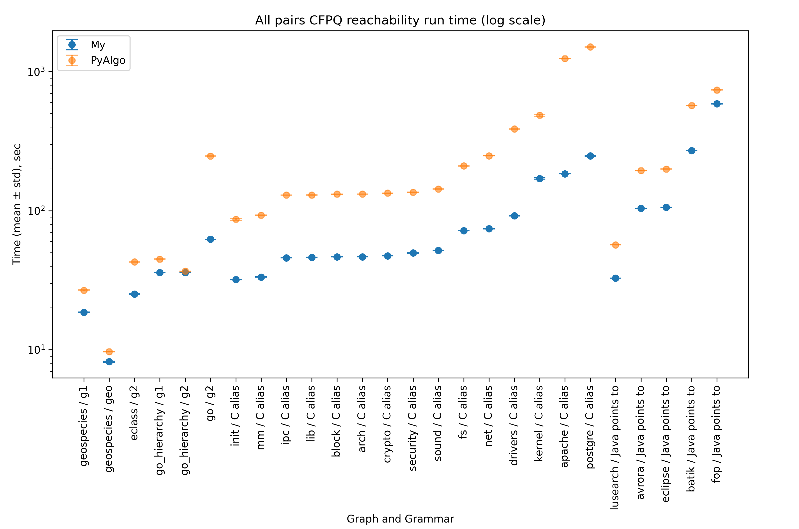

Ilya Muravyov
I am a third year software engineering student.

Сейчас я работаю над предложенной мной концептуальной оптимизацией матричного алгоритма достижимости (и поиска путей) с контекстно-свободными (КС) ограничениями. К настоящему времени уже было экспериментально подтверждено ускорение в разы реализации алгоритма КС-достижимости для всех пар вершин, но эти результаты ещё не были опубликованы.
Научный руководитель: Григорьев Семен Вячеславович
Provides a graphical interface for designing, editing, analyzing, transforming, and debugging finite automatons, pushdown automatons, Mealy and Moore machines, various variants of Turing machines, and more.
Supervisor: Yurii Litvinov
Contributors: Azim Muradov, Yuri Ufimtsev
Reports:
Supports interactive layout and community search algorithms for social networks.
Co-author: Lev0nid

Apart from developing software myself, I have an unexplainable urge to help other people solve some peculiar problems. Ever since I entered the university, I’ve had plenty of classmates for that. Earlier I used to ask and answer questions on Stack Overflow and Code Review, receiving over 2900 reputation points and spending 600 of them on bounties. Nowadays, I like to occasionally re-read some random old posts, reflecting on my professional growth over the past few years.

{kind=link}
{kind=link}
{kind=link}
{kind=link}
{kind=link}
{kind=link}